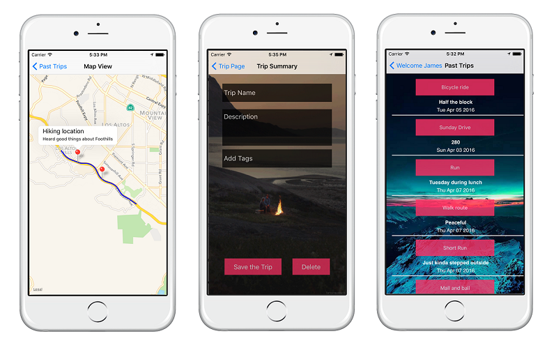

Role: Mobile Software Engineer
Stack: React Native, Firebase
Breadcrumbs is an iOS mobile app that allows users to retrace their steps and share places they visit.
The app uses GPS so users can track their path on a map and leave 'crumbs' – pins that contain descriptions, tags, and coordinates. Trips are displayed using an interactive map GUI. Past trips are stored and are easily retrievable by the user.
